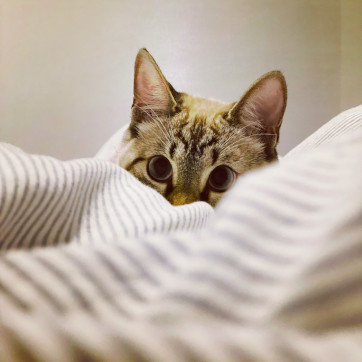
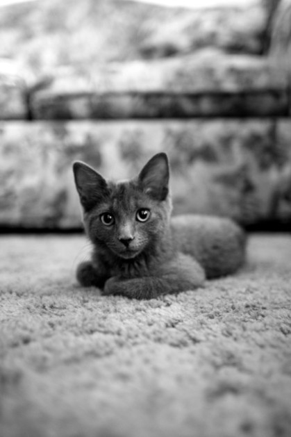
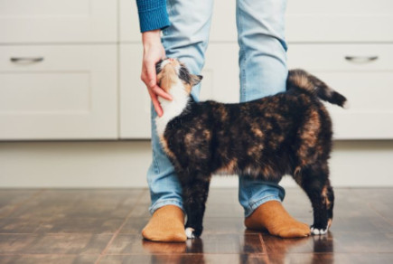

Olá, Seja Bem-Vindo ao meu Site sobre Gatos!!
Olá, meu nome é Tábata Alves, tenho 34 anos e sou formada em Desenvolvimento de Sistemas e sou estutande de Gestão de TI. Esse é meu primeiro site, e eu decidi falar um pouco sobre gatos e como eles se comportam e talvez como seja os seus pensamentos. Este site eu aprendi a desenvolver ele no bootcamp da MRV Front End SPA Developer na DIO: https://web.digitalinnovation.one . Ele é desenvolvido, na aula de css, html e javascript. Tomara que você aproveite bastante e seja muito bem vindo!! Estou deixando o site do meu portfólio, caso você queira saber mais sobre os meus outros trabalhos e códigos que fiz, ao longo dos meus estudos. https://github.com/Tabataalves2215". Mas, o mais importante, muito obrigada por você visitar o meu site, e aproveitem para descobrir mais sobre gatos e suas paixões.
O gato (Felis silvestris catus), também conhecido como gato caseiro, gato urbano ou gato doméstico, é um mamífero carnívoro da família dos felídeos, muito popular como animal de estimação. Ocupando o topo da cadeia alimentar, é predador natural de diversos animais, como roedores, pássaros, lagartixas e alguns insetos.
Mitos e Verdades sobre os Gatos

Mitos
♥ Um dos maiores mitos é que o gato odeia água, mas isso é bem relativo. Tudo vai depender de como o gato é acostumado. Algumas raças, por exemplo, como o Maine Coon e o Angorá Turco adoram! E na falta de água, gostam de procurar torneiras para se refrescarem e alguns se jogam até dentro de vasos sanitários.
♥ Na Idade Média, mais especificamente no Ocidente, as pessoas acreditavam que cruzar com um gato preto na rua dava azar; já no Japão eles são símbolos de muita sorte.
♥ Gatos tem 7 vidas? Esse é um dos maiores mitos da história dos gatos! Mas infelizmente não, eles só possuem uma vida e a expectativa é de até 15 anos, mas isso vai depender de muitos fatores ao longo da vida.
♥ Outro mito é de que os gatos não podem ser adestrados. Todo animal pode ser adestrado, basta ter muita paciência e as técnicas certas para essa tarefa. Esse pode ser um processo demorado, mas eles podem sim aprender diversos comandos.
Verdades
♥ Essa talvez seja uma curiosidade que parece mito, mas não é: gatos brancos de olhos azuis são surdos. O que dizem os estudos é que os gatos de pelagem completamente branca e com olhos azuis são surdos de nascença. Isso acontece pela presença do gene W (“white”, branco em português), que acaba transportando esse probleminha para os gatos brancos. Mas não se preocupe, essa condição não se adequa a todos os gatos dessa cor, porque o gene age de maneiras diferentes nos gatos.
♥ Quando os gatinhos são castrados, a tendência é que eles fiquei gordinhos, atingindo até a obesidade, em alguns casos. Isso porque a castração modifica o metabolismo, por isso é importante que o gatinho receba uma alimentação balanceada para evitar que atinja a obesidade. No mercado pet existem diversas rações próprias para gatinhos castrados, elas são ótimas auxiliadoras nesse processo.
♥ Miar e ronronar são as formas que o gatinho tem para se comunicar com o seu tutor, para mostrar algo que está errado ou até mesmo para chamar atenção. Mas se o seu gatinho ronronar após ganhar um carinho ou até mesmo depois de comer, significa que ele está feliz e tranquilo.
♥ No meio felino, os gatos pretos tem mais sorte que seus amiguinhos de outras colorações, segundo uma pesquisa sobre gatos realizada pelo Instituto Nacional de Saúde dos EUA, onde o estudo explica que a coloração escura dos gatos pretos seriam responsáveis por torná-los imunes ao vírus do HIV felino.
A comunicação dos Gatos

Após algum tempo de convívio, todo tutor consegue identificar os miados e comportamentos de seu bichano. Mas, as dúvidas sobre o que esses peludinhos realmente querem dizer ainda pairam no ar. Saiba como os gatos se comunicam.
Os sinais de comunicação podem ser divididos em quatro categorias específicas. São atitudes, trejeitos e vocalizações que explicam um pouco sobre a linguagem dos gatos e como esses animais “conversam” entre si e com os humanos
Chamado pelos especialistas de allogrooming, o hábito de alguns gatos de se lamberem mutuamente é muito positivo. O ato é comum em situações pós-conflitos, como uma reconciliação. Outros bichanos fazem isso para iniciar uma brincadeira.
Hábito de se esfregar

Mesmo que nem sempre seja mútuo, as características dos gatos incluem o fato deles se esfregarem em um amigo, algo super comum no universo felino. A mania, nomeada de allorubbing, também é praticada pelo pet com seu tutor.
Mas, muito cuidado! Alguns tutores confundem o ato como um pedido por comida e petiscos, dando abertura aos maus hábitos alimentares. Porém, na maioria das vezes se trata apenas de uma demonstração de carinho.
Para estes e mais assuntos sobre gatos, visite o site:
https://www.petz.com.br